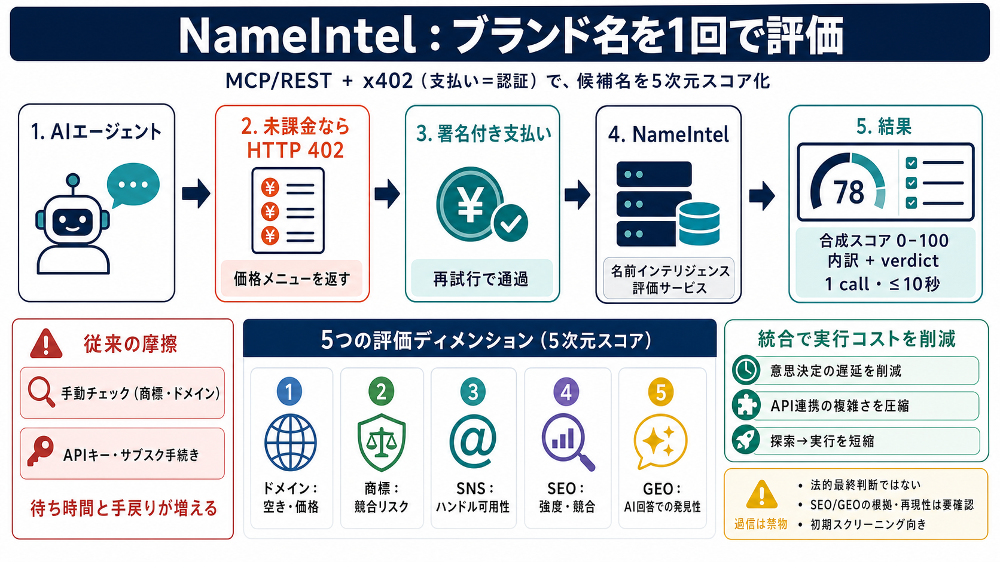

What is x402? | Payment Protocol for AI Agents on Solana | Solana
| Payment Protocol for AI Agents on Solana. Learn how x402 enables AI agents to make internet-native payments with the H…

| Payment Protocol for AI Agents on Solana. Learn how x402 enables AI agents to make internet-native payments with the H…
# x402: An AI-Native Payment Protocol for the Web. It revives the long-reserved HTTP 402 “Payment Required” status code …
x402 is an open payment protocol that enables instant, programmatic payments over HTTP. Designed for AI agents and APIs,…
fundamentals — x402 — HTTP 402 Payment Standard — Stablecoin Micropayments — AI Agent Commerce — Stablecoins — Stablecoi…
# When AI Agents Learn to Pay: A Deep Dive into the x402 Protocol and Agent Payment Infrastructure. Your AI agent needs …